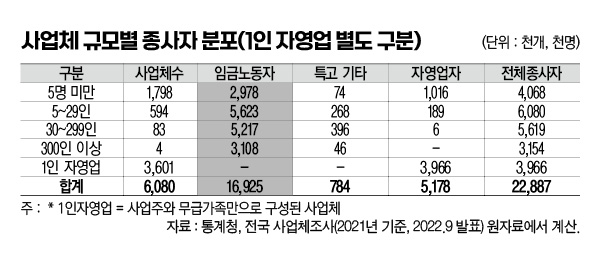
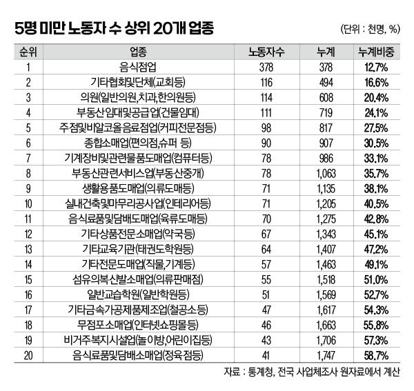
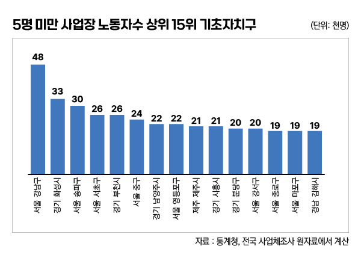

박영삼의 통계로 보는 노동
5명 미만 사업장 노동자 ’상위 20개 업종’에 58.7% 몰려
전국사업체조사 전수자료 228개 업종 분석 … 1위 음식점, 2위 종교단체, 3위 의원
5명 미만 사업장에서 일하는 노동자는 몇 명이고, 그들이 가장 많이 일하고 있는 업종은 어떤 곳일까? 원자료 분석 결과 음식점과 의원을 비롯해서 임금노동자수 기준 상위 20개 업종이 우리나라 5명 미만 노동자의 60%를 포괄하고 있는 것으로 나타났다.
가구 표본조사 결과를 보면 전국의 임금노동자 2천172만4천명 가운데 5명 미만 사업체에 종사하는 노동자는 375만명으로 전체 노동자의 17.3%를 차지한다. 가장 많은 노동자들이 일하는 산업은 도소매업으로 73만5천명이 일하고, 음식숙박업이 64만2천명으로 뒤를 이었다.(통계청 경제활동인구 부가조사, 2022년 8월 기준)
하지만 산업대분류가 아니라 소분류 업종이 무엇인지 자세히 알려면 전수자료인 통계청의 전국사업체조사를 확인해야 한다. 가장 큰 표본조사인 지역별 고용조사에서도 산업소분류 기준을 제공하지만 사업체 규모 정보가 없고, 고용노동부의 사업체 근로형태별조사 자료는 5명이상 사업체만 조사된다.
전국사업체조사의 가장 최근 시점 원자료는 지난해 12월 공개된 2021년 말 기준 자료다. 이 자료에서 우리나라의 사업체는 607만9천702개, 종사자는 2천288만6천963명으로 나온다. 여기에 사업주와 친인척만으로 구성되는 1인 자영업자를 제외한 다음 임금노동자만으로 종사자 규모를 재분류하면 전체 사업체는 247만8천815개가 되고 임금노동자는 1천692만5천372명이다. 이 가운데 상시근로자 5명 미만 사업체는 179만7천520개, 노동자는 297만7천593명이다. 임금노동자 가운데 5명 미만 비중은 17.6%가 된다. 경제활동인구 부가조사 결과의 17.3%와 비슷하다.

이제 5명 미만 사업체 노동자가 가장 많이 분포하는 업종을 확인해 볼 차례다. 업종 소분류 명칭만으로는 사업의 실제 내용을 알기 어려운 경우가 있기 때문에 세세분류 업종을 확인할 수 있는 서울시 사업체조사 자료를 활용해서 추가 설명을 하기로 한다.
산업소분류 기준 5명 미만 사업장의 노동자가 많은 압도적인 1위 업종은 ’음식점업’이다. 19만7천개 사업장에 37만8천명의 노동자가 일하고 있다. 음식점은 단일 업종으로 전체 5명 미만 노동자의 12.7%를 포괄하고 있다.
음식점 다음으로는 9만5천개 사업장에 11만6천명의 노동자가 일하고 있는 ’기타협회 및 단체’다. 종교단체가 대부분을 차지하는데, 그중에서도 교회(기독교단체)에서 가장 많은 노동자가 일하고 있다.
3위는 일반의원과 치과의원, 한의원 같은 의원이다. 4만1천개 사업장, 11만4천명의 노동자가 있다. 보건의료업은 병원과 의원으로 구분되는데, 의원 업종에 종사하는 34만9천명의 노동자 가운데 32.6%가 5명 미만 의원 소속이다.

그 다음으로는 ’부동산임대공급업’이 11만4천명으로 4위를 차지했다. 여기에 ’부동산중개업(8위)’은 포함되지 않는다. 2018년 이후 임대사업자 등록에 대한 혜택 등으로 사업체가 크게 늘어난 영향이 있는 것으로 보인다. 그 뒤를 이어 커피전문점이 포함되는 ’주점 및 비알콜음료점업’이 9만8천명으로 5위를 차지했고, 편의점이 속한 ’종합소매업’이 9만명으로 6위를 차지했다. 이렇게 6개 업종의 노동자수를 합산한 규모만 90만7천명으로 전체 5명 미만 사업장 노동자의 30%를 넘는다.
그 다음으로는 전기와 컴퓨터 관련 ’기계장비 및 물품도매업’이 7만8천명으로 7위를, 부동산중개업이 7만8천명으로 근소한 차이로 8위를 차지했다. 의류도매 등 ’생활용품 도매업’과 인테리어업체 등이 포함되는 ’실내건축 및 마무리공사업’이 각각 7만1천명 규모다.
그 뒤로는 기타 상품 전문 소매업(약국 등)과 기타 교육기관(태권도학원 등)이 각각 6만명대의 노동자를 고용하고 있고, 옷가게로 대표되는 의복신발소매업과 철공소 등이 포함되는 기타금속제품가공업이 4만~5만명의 분포를 보였다. 20위에 포함되는 나머지 업종에는 무점포소매업(인터넷 쇼핑몰)과 비거주복지시설업(놀이방·어린이집 등), 정육점이 포함되는 음식료품담배소매업이 4만명대를 나타냈다.
이렇게 5명 미만 사업장 노동자수 20위까지의 업종에 174만7천명의 노동자가 일하는 것으로 나타났는데, 총 228개 업종에 종사하는 5명 미만 사업체 노동자의 58.7%에 해당한다. 음식점 등 일부 업종을 제외하고는 상당수 업종이 지불능력과 관리능력이 있으며, 전국적인 체인과 프랜차이즈 형태의 사업구조를 갖고 있는 경우도 있다. 병원과 학원·편의점 등이 여기에 해당한다.

자치단체별 분포를 보면 5명 미만 사업체의 일자리가 대도시의 중심 거점 지역에 주로 분포하고 있다는 사실도 확인할 수 있다. 전국 250개 자치단체 중에서 5명 미만 사업장 노동자가 가장 많이 있는 지역은 서울 강남구, 경기 화성시, 서울 송파구, 서울 서초구, 경기 부천시, 서울 중구, 경기 남양주, 서울 영등포구, 제주 제주시 순이다. 모두 대한민국에서 가장 앞서 나가는 지역의 도시들이다.
근로기준법 확대 적용에는 다양한 어려움이 있을 수 있다. 하지만 5명 미만 사업장 노동자들에게도 헌법이 정하고 있는 “최저 근로조건을 법률로 보장하는” 일을 이제는 더 이상 미루지 않아야 한다.

고려대 노동문제연구소 노동데이터센터장 (youngsampk@gmail.com)